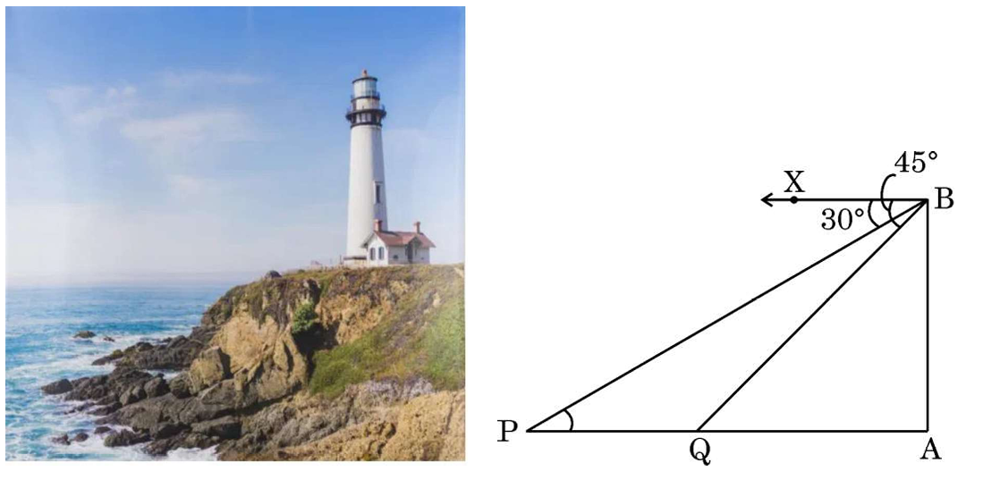
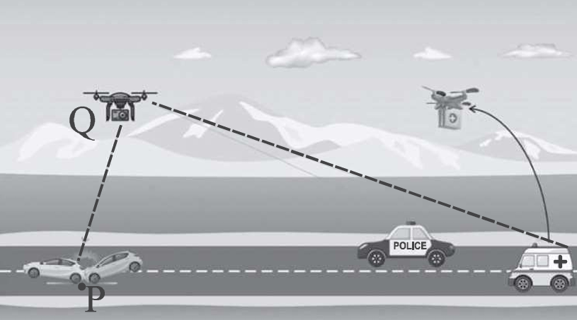

Board Exam 2025
1 Mark
Q1. The length of the string of a kite flying 50
m above the ground with an elevation of \(60^\circ\) is:
\(\sin 60^\circ = \frac{\text{Height}}{\text{Length}} \) \(\Rightarrow\) \( \frac{\sqrt{3}}{2} =
\frac{50}{L}\).
\(L = \frac{100}{\sqrt{3}}\) m.
Answer: (A)
\(L = \frac{100}{\sqrt{3}}\) m.
Answer: (A)
4 Marks
Q38. Case Study - 3
 The International Kite Festival takes place every year on 14th January. The main attractions of the
festival include national and international Kite Flyers' Parade, kite flying, traditional stalls etc. On
this day, few kite flyers, had assembled at a point 'O' on the ground. The position of 3 kites A, B, C
was such that A and B were at the same vertical height of 40 m from the ground level. The angles of
elevation of A, B and C from O were \(60^\circ\), \(45^\circ\) and \(30^\circ\) respectively. A vertical
tower, SD has been erected at point S and a camera is set at the top of the tower for photography.
The International Kite Festival takes place every year on 14th January. The main attractions of the
festival include national and international Kite Flyers' Parade, kite flying, traditional stalls etc. On
this day, few kite flyers, had assembled at a point 'O' on the ground. The position of 3 kites A, B, C
was such that A and B were at the same vertical height of 40 m from the ground level. The angles of
elevation of A, B and C from O were \(60^\circ\), \(45^\circ\) and \(30^\circ\) respectively. A vertical
tower, SD has been erected at point S and a camera is set at the top of the tower for photography.
 (i) What is the length of the string of the kite at A ?
(i) What is the length of the string of the kite at A ?
(ii) If the length of the string of kite at C is 40 m, then find the height of that kite C from the ground.
(iii) (a) What is the horizontal distance between the kites at A and B ?
The International Kite Festival takes place every year on 14th January. The main attractions of the
festival include national and international Kite Flyers' Parade, kite flying, traditional stalls etc. On
this day, few kite flyers, had assembled at a point 'O' on the ground. The position of 3 kites A, B, C
was such that A and B were at the same vertical height of 40 m from the ground level. The angles of
elevation of A, B and C from O were \(60^\circ\), \(45^\circ\) and \(30^\circ\) respectively. A vertical
tower, SD has been erected at point S and a camera is set at the top of the tower for photography.
(i) What is the length of the string of the kite at A ?(ii) If the length of the string of kite at C is 40 m, then find the height of that kite C from the ground.
(iii) (a) What is the horizontal distance between the kites at A and B ?
OR
(iii) (b) If the angle of depression of the kite at A is \(30^\circ\) from the camera at D and the
distance between A and D is 60 m, then find the height of the tower.
(i) A is at 40m, angle \(60^\circ\). \(\sin 60 = 40/L_A \) \(\Rightarrow\) \( \sqrt{3}/2 = 40/L_A
\) \(\Rightarrow\) \( L_A = 80/\sqrt{3} = 80\sqrt{3}/3\).
(ii) C string = 40m, angle \(30^\circ\). Height \(h\). \(\sin 30 = h/40 \) \(\Rightarrow\) \( 1/2 = h/40 \) \(\Rightarrow\) \( h = 20\) m.
(iii) (a) Horizontal dist A: \(\tan 60 = 40/x_A \) \(\Rightarrow\) \( x_A = 40/\sqrt{3}\).
Horizontal dist B: \(\tan 45 = 40/x_B \Rightarrow x_B = 40\).
Difference = \(40 - \frac{40}{\sqrt{3}} = 40(1 - \frac{\sqrt{3}}{3})\) m.
(iii) (b) A is at height 40. D is higher. Angle dep = 30. Dist AD = 60.
Vertical gap \(y\). \(\sin 30 = y/60 \) \(\Rightarrow\) \( 1/2 = y/60 \) \(\Rightarrow\) \( y = 30\).
Tower Height = Height A + \(y = 40 + 30 = 70\) m.
(ii) C string = 40m, angle \(30^\circ\). Height \(h\). \(\sin 30 = h/40 \) \(\Rightarrow\) \( 1/2 = h/40 \) \(\Rightarrow\) \( h = 20\) m.
(iii) (a) Horizontal dist A: \(\tan 60 = 40/x_A \) \(\Rightarrow\) \( x_A = 40/\sqrt{3}\).
Horizontal dist B: \(\tan 45 = 40/x_B \Rightarrow x_B = 40\).
Difference = \(40 - \frac{40}{\sqrt{3}} = 40(1 - \frac{\sqrt{3}}{3})\) m.
(iii) (b) A is at height 40. D is higher. Angle dep = 30. Dist AD = 60.
Vertical gap \(y\). \(\sin 30 = y/60 \) \(\Rightarrow\) \( 1/2 = y/60 \) \(\Rightarrow\) \( y = 30\).
Tower Height = Height A + \(y = 40 + 30 = 70\) m.
1 Mark
Q3. A kite is flying at a height of 150 m from
the ground. It is attached to a string inclined at an angle of \(30^\circ\) to the horizontal. The
length of the string is:
\(\sin 30^\circ = \frac{\text{Height}}{\text{String Length}}\).
\(\frac{1}{2} = \frac{150}{L} \) \(\Rightarrow\) \( L = 300\) m.
Answer: (B)
\(\frac{1}{2} = \frac{150}{L} \) \(\Rightarrow\) \( L = 300\) m.
Answer: (B)
4 Marks
Q36. Amrita stood near the base of a lighthouse,
gazing up at its towering height. She measured the angle of elevation to the top and found it to be
\(60^\circ\). Then, she climbed a nearby observation deck, 40 metres higher than her original position
and noticed the angle of elevation to the top of lighthouse to be \(45^\circ\).
 Based on the above given information, answer the following questions :
Based on the above given information, answer the following questions :
(i) If CD is h metres, find the distance BD in terms of 'h'. [1 Mark]
(ii) Find distance BC in terms of 'h'. [1 Mark]
(iii) (a) Find the height CE of the lighthouse [Use \(\sqrt{3} = 1.73\)] [2 Marks]
Based on the above given information, answer the following questions :(i) If CD is h metres, find the distance BD in terms of 'h'. [1 Mark]
(ii) Find distance BC in terms of 'h'. [1 Mark]
(iii) (a) Find the height CE of the lighthouse [Use \(\sqrt{3} = 1.73\)] [2 Marks]
OR
(iii) (b) Find distance AE, if AC = 100 m. [2 Marks]
(i) In \(\Delta BDC\) (top triangle), \(\tan 45^\circ = CD/BD \) \(\Rightarrow\) \( 1 = h/BD
\) \(\Rightarrow\) \( BD = h\).
(ii) In \(\Delta BDC\), \(\sin 45^\circ = h/BC \) \(\Rightarrow\) \( 1/\sqrt{2} = h/BC \) \(\Rightarrow\) \( BC = h\sqrt{2}\).
(iii) (a) In \(\Delta AEC\) (large triangle), \(AE = BD = h, CE = h + 40\).
\(\tan 60^\circ = CE/AE \) \(\Rightarrow\) \( \sqrt{3} = \frac{h+40}{h} \) \(\Rightarrow\) \( h\sqrt{3} = h + 40\).
\(h(\sqrt{3} - 1) = 40 \) \(\Rightarrow\) \( h = \frac{40}{1.73 - 1} \approx 54.8\). Height \(CE = 54.8 + 40 = 94.8\) m.
(iii) (b) In \(\Delta AEC\), if \(AC = 100\), \(\cos 60^\circ = AE/AC \) \(\Rightarrow\) \( 1/2 = AE/100 \) \(\Rightarrow\) \( AE = 50\) m.
(ii) In \(\Delta BDC\), \(\sin 45^\circ = h/BC \) \(\Rightarrow\) \( 1/\sqrt{2} = h/BC \) \(\Rightarrow\) \( BC = h\sqrt{2}\).
(iii) (a) In \(\Delta AEC\) (large triangle), \(AE = BD = h, CE = h + 40\).
\(\tan 60^\circ = CE/AE \) \(\Rightarrow\) \( \sqrt{3} = \frac{h+40}{h} \) \(\Rightarrow\) \( h\sqrt{3} = h + 40\).
\(h(\sqrt{3} - 1) = 40 \) \(\Rightarrow\) \( h = \frac{40}{1.73 - 1} \approx 54.8\). Height \(CE = 54.8 + 40 = 94.8\) m.
(iii) (b) In \(\Delta AEC\), if \(AC = 100\), \(\cos 60^\circ = AE/AC \) \(\Rightarrow\) \( 1/2 = AE/100 \) \(\Rightarrow\) \( AE = 50\) m.
5 Marks
Q33. (a) Two ships are sailing in the sea on
either side of a lighthouse. The angles of depression of two ships as observed from the top of the
lighthouse are \(60^\circ\) and \(45^\circ\). If the distance between the ships is
\(100(\frac{1+\sqrt{3}}{\sqrt{3}})\) m, then find the height of the lighthouse.
OR
Q33. (b) The angles of depression of the top
and the bottom of an 8 m tall building from the top of another multistoried building are
\(30^\circ\) and \(45^\circ\). Find the height of the multistoried building and the distance between
the two buildings.
(a) Let height be \(h\). Horizontal dist: \(x\) and \(y\).
\(\tan 60 = h/x \Rightarrow x = h/\sqrt{3}\). \(\tan 45 = h/y \Rightarrow y = h\).
Total dist \(x + y = h(1/\sqrt{3} + 1) = h(\frac{1+\sqrt{3}}{\sqrt{3}})\).
Given dist = \(100(\frac{1+\sqrt{3}}{\sqrt{3}})\).
So \(h = 100\) m.
(b) Let multi height be \(H\), dist be \(d\). Small building \(h = 8\).
\(\tan 45 = H/d \Rightarrow H = d\).
\(\tan 30 = \frac{H-8}{d} \) \(\Rightarrow\) \( \frac{1}{\sqrt{3}} = \frac{H-8}{H}\).
\(H = \sqrt{3}H - 8\sqrt{3} \) \(\Rightarrow\) \( H(\sqrt{3} - 1) = 8\sqrt{3}\).
\(H = \frac{8\sqrt{3}}{\sqrt{3}-1} \times \frac{\sqrt{3}+1}{\sqrt{3}+1} = \frac{8(3+\sqrt{3})}{2} = 4(3 + \sqrt{3}) = 12 + 4\sqrt{3}\) m.
Distance \(d = 12 + 4\sqrt{3}\) m.
\(\tan 60 = h/x \Rightarrow x = h/\sqrt{3}\). \(\tan 45 = h/y \Rightarrow y = h\).
Total dist \(x + y = h(1/\sqrt{3} + 1) = h(\frac{1+\sqrt{3}}{\sqrt{3}})\).
Given dist = \(100(\frac{1+\sqrt{3}}{\sqrt{3}})\).
So \(h = 100\) m.
(b) Let multi height be \(H\), dist be \(d\). Small building \(h = 8\).
\(\tan 45 = H/d \Rightarrow H = d\).
\(\tan 30 = \frac{H-8}{d} \) \(\Rightarrow\) \( \frac{1}{\sqrt{3}} = \frac{H-8}{H}\).
\(H = \sqrt{3}H - 8\sqrt{3} \) \(\Rightarrow\) \( H(\sqrt{3} - 1) = 8\sqrt{3}\).
\(H = \frac{8\sqrt{3}}{\sqrt{3}-1} \times \frac{\sqrt{3}+1}{\sqrt{3}+1} = \frac{8(3+\sqrt{3})}{2} = 4(3 + \sqrt{3}) = 12 + 4\sqrt{3}\) m.
Distance \(d = 12 + 4\sqrt{3}\) m.
5 Marks
Q34. A ladder set against a wall at an angle
\(45^\circ\) to the ground. If the foot of the ladder is pulled away from the wall through a distance of
4 m, its top slides a distance of 3 m down the wall making an angle \(30^\circ\) with the ground. Find
the final height of the top of the ladder from the ground and the length of the ladder.
Let the length of the ladder be \(L\).
Case 1: Ladder makes \(45^\circ\) with ground.
Initial Height \(h_1 = L \sin 45^\circ = \frac{L}{\sqrt{2}}\).
Initial Base \(x_1 = L \cos 45^\circ = \frac{L}{\sqrt{2}}\).
Case 2: Ladder slides down 3 m and base pulled 4 m away. Angle becomes \(30^\circ\).
Final Height \(h_2 = h_1 - 3\).
Final Base \(x_2 = x_1 + 4\).
Also from triangle: \(h_2 = L \sin 30^\circ = \frac{L}{2}\).
And \(x_2 = L \cos 30^\circ = \frac{L\sqrt{3}}{2}\).
Using Height Relation:
\(h_1 - h_2 = 3 \) \(\Rightarrow\) \( \frac{L}{\sqrt{2}} - \frac{L}{2} = 3\).
\(L(\frac{1}{\sqrt{2}} - 0.5) = 3 \) \(\Rightarrow\) \( L(\frac{2 - \sqrt{2}}{2\sqrt{2}}) = 3\).
\(L = \frac{6\sqrt{2}}{2 - \sqrt{2}} = \frac{6\sqrt{2}(2+\sqrt{2})}{4-2} = 3\sqrt{2}(2+\sqrt{2}) = 6\sqrt{2} + 6 \approx 14.49\) m.
(Note: Checking with horizontal shift: \(x_2 - x_1 = L(\frac{\sqrt{3}}{2} - \frac{1}{\sqrt{2}}) \approx 14.49(0.159) \approx 2.3\) m, which differs from 4 m. We proceed with the vertical shift data).
Final Height: \(h_2 = \frac{L}{2} = \frac{6\sqrt{2} + 6}{2} = 3\sqrt{2} + 3 \approx 7.24\) m.
Length of Ladder: \(L = 6(\sqrt{2} + 1) \approx 14.49\) m.
Case 1: Ladder makes \(45^\circ\) with ground.
Initial Height \(h_1 = L \sin 45^\circ = \frac{L}{\sqrt{2}}\).
Initial Base \(x_1 = L \cos 45^\circ = \frac{L}{\sqrt{2}}\).
Case 2: Ladder slides down 3 m and base pulled 4 m away. Angle becomes \(30^\circ\).
Final Height \(h_2 = h_1 - 3\).
Final Base \(x_2 = x_1 + 4\).
Also from triangle: \(h_2 = L \sin 30^\circ = \frac{L}{2}\).
And \(x_2 = L \cos 30^\circ = \frac{L\sqrt{3}}{2}\).
Using Height Relation:
\(h_1 - h_2 = 3 \) \(\Rightarrow\) \( \frac{L}{\sqrt{2}} - \frac{L}{2} = 3\).
\(L(\frac{1}{\sqrt{2}} - 0.5) = 3 \) \(\Rightarrow\) \( L(\frac{2 - \sqrt{2}}{2\sqrt{2}}) = 3\).
\(L = \frac{6\sqrt{2}}{2 - \sqrt{2}} = \frac{6\sqrt{2}(2+\sqrt{2})}{4-2} = 3\sqrt{2}(2+\sqrt{2}) = 6\sqrt{2} + 6 \approx 14.49\) m.
(Note: Checking with horizontal shift: \(x_2 - x_1 = L(\frac{\sqrt{3}}{2} - \frac{1}{\sqrt{2}}) \approx 14.49(0.159) \approx 2.3\) m, which differs from 4 m. We proceed with the vertical shift data).
Final Height: \(h_2 = \frac{L}{2} = \frac{6\sqrt{2} + 6}{2} = 3\sqrt{2} + 3 \approx 7.24\) m.
Length of Ladder: \(L = 6(\sqrt{2} + 1) \approx 14.49\) m.
1 Mark
Q20. If the length of the shadow of a tower
of height 60 m is \(20\sqrt{3}\) m, then the angle of elevation of the sun is :
\(\tan \theta = \frac{\text{Height}}{\text{Shadow}} = \frac{60}{20\sqrt{3}} = \frac{3}{\sqrt{3}} =
\sqrt{3}\).
\(\tan \theta = \sqrt{3} \) \(\Rightarrow\) \( \theta = 60^\circ\).
Answer: (B)
\(\tan \theta = \sqrt{3} \) \(\Rightarrow\) \( \theta = 60^\circ\).
Answer: (B)
1 Mark
Q20. Assertion (A): A ladder
leaning against a wall, stands at a horizontal distance of 6 m from the wall. If the height of the wall
up to which the ladder reaches is 8 m, then the length of the ladder is 10 m.
Reason (R): The ladder makes an angle of 60° with the ground.
Reason (R): The ladder makes an angle of 60° with the ground.
Check A: By Pythagoras: \(L^2 = 6^2 + 8^2 = 36 + 64 = 100 \) \(\Rightarrow\) \( L = 10\) m.
True.
Check R: \(\tan \theta = \frac{8}{6} = \frac{4}{3} \approx 1.33\). But \(\tan 60° = \sqrt{3} \approx 1.73\).
So angle is not 60°. (Actual angle \(\approx 53.13°\)). False.
Answer: (C)
Check R: \(\tan \theta = \frac{8}{6} = \frac{4}{3} \approx 1.33\). But \(\tan 60° = \sqrt{3} \approx 1.73\).
So angle is not 60°. (Actual angle \(\approx 53.13°\)). False.
Answer: (C)
4 Marks
Q36. A lighthouse stands tall on a cliff by the

sea, watching over ships that pass by. One day a ship is seen approaching the shore and from the top of
the lighthouse, the angles of depression of the ship are observed to be 30° and 45° as it moves from
point P to point Q. The height of the lighthouse is 50 metres.
Based on the information given above, answer the following questions :
(i) Find the distance of the ship from the base of the lighthouse when it is at point Q, where the angle of depression is 45°. [1 Mark]
(ii) Find the measures of \(\angle\) PBA and \(\angle\) QBA. [1 Mark]
(iii) (a) Find the distance travelled by the ship between points P and Q. [2 Marks]
(i) Find the distance of the ship from the base of the lighthouse when it is at point Q, where the angle of depression is 45°. [1 Mark]
(ii) Find the measures of \(\angle\) PBA and \(\angle\) QBA. [1 Mark]
(iii) (a) Find the distance travelled by the ship between points P and Q. [2 Marks]
OR
(iii) (b) If the ship continues moving towards the shore and takes 10 minutes to travel from Q to A,
calculate the speed of the ship in km/h, from Q to A. [2 Marks]
Height of lighthouse \(h = 50\) m.
(i) At Q (angle of depression 45°):
\(\tan 45° = \frac{50}{AQ} \) \(\Rightarrow\) \( 1 = \frac{50}{AQ} \) \(\Rightarrow\) \( AQ = 50\) m.
(ii) \(\angle PBA = 90° - 30° = 60°\) (alternate angle to angle of depression).
\(\angle QBA = 90° - 45° = 45°\).
(iii) (a) At P (angle of depression 30°):
\(\tan 30° = \frac{50}{AP} \) \(\Rightarrow\) \( \frac{1}{\sqrt{3}} = \frac{50}{AP} \) \(\Rightarrow\) \( AP = 50\sqrt{3}\) m.
Distance PQ = \(AP - AQ = 50\sqrt{3} - 50 = 50(\sqrt{3} - 1) = 50(1.732 - 1) = 50 \times 0.732 = 36.6\) m.
(iii) (b) Distance QA = 50 m. Time = 10 min = \(\frac{1}{6}\) hour.
Speed = \(\frac{50 \text{ m}}{10 \text{ min}} = 5\) m/min = \(\frac{5 \times 60}{1000}\) km/h = 0.3 km/h.
(i) At Q (angle of depression 45°):
\(\tan 45° = \frac{50}{AQ} \) \(\Rightarrow\) \( 1 = \frac{50}{AQ} \) \(\Rightarrow\) \( AQ = 50\) m.
(ii) \(\angle PBA = 90° - 30° = 60°\) (alternate angle to angle of depression).
\(\angle QBA = 90° - 45° = 45°\).
(iii) (a) At P (angle of depression 30°):
\(\tan 30° = \frac{50}{AP} \) \(\Rightarrow\) \( \frac{1}{\sqrt{3}} = \frac{50}{AP} \) \(\Rightarrow\) \( AP = 50\sqrt{3}\) m.
Distance PQ = \(AP - AQ = 50\sqrt{3} - 50 = 50(\sqrt{3} - 1) = 50(1.732 - 1) = 50 \times 0.732 = 36.6\) m.
(iii) (b) Distance QA = 50 m. Time = 10 min = \(\frac{1}{6}\) hour.
Speed = \(\frac{50 \text{ m}}{10 \text{ min}} = 5\) m/min = \(\frac{5 \times 60}{1000}\) km/h = 0.3 km/h.
1 Mark
Q1. A 30 m long rope is tightly stretched and
tied from the top of pole to the ground. If the rope makes an angle of 60° with the ground, the height
of the pole is :
Let height of pole = h.
\(\sin 60° = \frac{h}{30}\).
\(\frac{\sqrt{3}}{2} = \frac{h}{30}\).
\(h = 30 \times \frac{\sqrt{3}}{2} = 15\sqrt{3}\) m.
Answer: (d)
\(\sin 60° = \frac{h}{30}\).
\(\frac{\sqrt{3}}{2} = \frac{h}{30}\).
\(h = 30 \times \frac{\sqrt{3}}{2} = 15\sqrt{3}\) m.
Answer: (d)
4 Marks
Q36. A drone was used to facilitate movement of

an ambulance on the straight highway to a point P on the ground where there was an accident. The
ambulance was travelling at the speed of 60 km/h. The drone stopped at a point Q, 100 m vertically above
the point P. The angle of depression of the ambulance was found to be \(30^\circ\) at a particular
instant.
Based on above information, answer the following questions :
(i) Represent the above situation with the help of a diagram. [1 Mark]
(ii) Find the distance between the ambulance and the site of accident (P) at the particular instant. (Use \(\sqrt{3} = 1.73\)) [1 Mark]
(iii) (a) Find the time (in seconds) in which the angle of depression changes from \(30^\circ\) to \(45^\circ\). [2 Marks]
(i) Represent the above situation with the help of a diagram. [1 Mark]
(ii) Find the distance between the ambulance and the site of accident (P) at the particular instant. (Use \(\sqrt{3} = 1.73\)) [1 Mark]
(iii) (a) Find the time (in seconds) in which the angle of depression changes from \(30^\circ\) to \(45^\circ\). [2 Marks]
OR
(iii) (b) How long (in seconds) will the ambulance take to reach point P from a point T on the highway
such that angle of depression of the ambulance at T is \(60^\circ\) from the drone ? [2 Marks]
(i) [Diagram showing Triangle QPX where Q is drone, P is accident site, X is ambulance.
QP=100m, Angle X = \(30^\circ\).]
(ii) In \(\Delta QPX\), \(\tan 30^\circ = \frac{QP}{PX} \) \(\Rightarrow\) \( \frac{1}{\sqrt{3}} = \frac{100}{PX} \) \(\Rightarrow\) \( PX = 100\sqrt{3} \approx 173\) m.
(iii) (a) At \(45^\circ\), distance \(PX' = 100/\tan 45^\circ = 100\) m.
Distance covered = \(173 - 100 = 73\) m.
Speed = 60 km/h = \(60 \times \frac{5}{18} = \frac{50}{3}\) m/s.
Time = \(\frac{\text{Distance}}{\text{Speed}} = \frac{73}{50/3} = \frac{219}{50} = 4.38\) seconds.
(iii) (b) At \(60^\circ\) (Point T), distance \(PT = 100/\tan 60^\circ = \frac{100}{\sqrt{3}}\) m.
Distance to travel to P is PT.
Time = \(\frac{100/\sqrt{3}}{50/3} = \frac{100}{\sqrt{3}} \times \frac{3}{50} = 2\sqrt{3} = 2(1.732) = 3.464\) seconds.
(ii) In \(\Delta QPX\), \(\tan 30^\circ = \frac{QP}{PX} \) \(\Rightarrow\) \( \frac{1}{\sqrt{3}} = \frac{100}{PX} \) \(\Rightarrow\) \( PX = 100\sqrt{3} \approx 173\) m.
(iii) (a) At \(45^\circ\), distance \(PX' = 100/\tan 45^\circ = 100\) m.
Distance covered = \(173 - 100 = 73\) m.
Speed = 60 km/h = \(60 \times \frac{5}{18} = \frac{50}{3}\) m/s.
Time = \(\frac{\text{Distance}}{\text{Speed}} = \frac{73}{50/3} = \frac{219}{50} = 4.38\) seconds.
(iii) (b) At \(60^\circ\) (Point T), distance \(PT = 100/\tan 60^\circ = \frac{100}{\sqrt{3}}\) m.
Distance to travel to P is PT.
Time = \(\frac{100/\sqrt{3}}{50/3} = \frac{100}{\sqrt{3}} \times \frac{3}{50} = 2\sqrt{3} = 2(1.732) = 3.464\) seconds.
2 Marks
Q21. (A) A 1.5 m tall boy is walking away from
the base of a lamp post which is 12 m high, at the speed of 2.5 m/sec. Find the length of his shadow
after 3 seconds.
OR
Q21. (B) In parallelogram ABCD, side AD is produced to a point E
and BE intersects CD at F. Prove that \(\Delta ABE \sim \Delta CFB\).
(A) Let AB = lamp post = 12 m, CD = boy = 1.5 m.
Let BD = distance walked = 2.5 × 3 = 7.5 m.
Let DE = shadow length = x.
Triangles ABE and CDE are similar (AA).
\(\frac{AB}{CD} = \frac{BE}{DE}\).
\(\frac{12}{1.5} = \frac{7.5 + x}{x}\).
\(8 = \frac{7.5 + x}{x}\).
\(8x = 7.5 + x \) \(\Rightarrow\) \( 7x = 7.5 \) \(\Rightarrow\) \( x = \frac{7.5}{7} = \frac{15}{14}\) m ≈ 1.07 m.
(B) In \(\Delta ABE\) and \(\Delta CFB\):
\(\angle ABE = \angle CBF\) (common angle at B).
\(\angle AEB = \angle CFB\) (alternate angles, AE || BC as ABCD is parallelogram).
By AA similarity, \(\Delta ABE \sim \Delta CFB\). Hence Proved.
Let BD = distance walked = 2.5 × 3 = 7.5 m.
Let DE = shadow length = x.
Triangles ABE and CDE are similar (AA).
\(\frac{AB}{CD} = \frac{BE}{DE}\).
\(\frac{12}{1.5} = \frac{7.5 + x}{x}\).
\(8 = \frac{7.5 + x}{x}\).
\(8x = 7.5 + x \) \(\Rightarrow\) \( 7x = 7.5 \) \(\Rightarrow\) \( x = \frac{7.5}{7} = \frac{15}{14}\) m ≈ 1.07 m.
(B) In \(\Delta ABE\) and \(\Delta CFB\):
\(\angle ABE = \angle CBF\) (common angle at B).
\(\angle AEB = \angle CFB\) (alternate angles, AE || BC as ABCD is parallelogram).
By AA similarity, \(\Delta ABE \sim \Delta CFB\). Hence Proved.
1 Mark
Q4. An observer 1.8 m tall stands away from a
chimney at a distance of 38.2 m along the ground. The angle of elevation of top of chimney from the eyes
of observer is \(45^\circ\). The height of chimney above the ground is
\(\tan 45^\circ = \frac{h}{38.2} \) \(\Rightarrow\) \( h = 38.2\) m (height above eyes).
Total height = \(38.2 + 1.8 = 40\) m.
Correct Option: (C)
Total height = \(38.2 + 1.8 = 40\) m.
Correct Option: (C)
4 Marks
Q36. Passenger boarding stairs, sometimes
 referred to as boarding ramps, stair cars or aircraft steps, provide a mobile means to travel between
the aircraft doors and the ground. Larger aircraft have door sills 5 to 20 feet (1 foot = 30 cm) high.
Stairs facilitate safe boarding and de-boarding.
referred to as boarding ramps, stair cars or aircraft steps, provide a mobile means to travel between
the aircraft doors and the ground. Larger aircraft have door sills 5 to 20 feet (1 foot = 30 cm) high.
Stairs facilitate safe boarding and de-boarding.
An aircraft has a door sill at a height of 15 feet above the ground. A stair car is placed at a horizontal distance of 15 feet from the plane. Based on given information, answer the questions given in part (i) and (ii).
(i) Find the angle at which stairs are inclined to reach the door sill 15 feet high above the ground. [1 Mark]
(ii) Find the length of stairs used to reach the door sill. [1 Mark]
Further, answer any one of the following questions :
(iii) (a) If the 20 feet long stairs is inclined at an angle of \(60^\circ\) to reach the door sill, then find the height of the door sill above the ground. (use \(\sqrt{3} = 1.732\)) [2 Marks]
referred to as boarding ramps, stair cars or aircraft steps, provide a mobile means to travel between
the aircraft doors and the ground. Larger aircraft have door sills 5 to 20 feet (1 foot = 30 cm) high.
Stairs facilitate safe boarding and de-boarding.An aircraft has a door sill at a height of 15 feet above the ground. A stair car is placed at a horizontal distance of 15 feet from the plane. Based on given information, answer the questions given in part (i) and (ii).
(i) Find the angle at which stairs are inclined to reach the door sill 15 feet high above the ground. [1 Mark]
(ii) Find the length of stairs used to reach the door sill. [1 Mark]
Further, answer any one of the following questions :
(iii) (a) If the 20 feet long stairs is inclined at an angle of \(60^\circ\) to reach the door sill, then find the height of the door sill above the ground. (use \(\sqrt{3} = 1.732\)) [2 Marks]
OR
(iii) (b) What should be the shortest possible length of stairs to reach the door sill of the plane 20
feet above the ground, if the angle of elevation cannot exceed \(30^\circ\) ? Also, find the horizontal
distance of base of stair car from the plane. [2 Marks]
(i) \(\tan \theta = 15/15 = 1 \) \(\Rightarrow\) \( \theta =
45°\).
(ii) \(H = 15\sqrt{2}\) ft.
(iii)(a) \(h = 20\sin 60° = 10\sqrt{3} \approx 17.32\) ft.
(iii)(b) \(L = 40\) ft, \(B = 20\sqrt{3}\) ft.
(ii) \(H = 15\sqrt{2}\) ft.
(iii)(a) \(h = 20\sin 60° = 10\sqrt{3} \approx 17.32\) ft.
(iii)(b) \(L = 40\) ft, \(B = 20\sqrt{3}\) ft.
1 Mark
Q4. A peacock sitting on the top of a tree of
height 10 m observes a snake moving on the ground. If the snake is \(10\sqrt{3}\) m away from the
base of the tree, then angle of depression of the snake from the eye of the peacock is
Height (Opposite) = 10 m.
Distance (Adjacent) = \(10\sqrt{3}\) m.
Let angle of depression be \(\theta\). Angle of elevation from ground is also \(\theta\).
\(\tan\theta = \frac{10}{10\sqrt{3}} = \frac{1}{\sqrt{3}}\).
\(\theta = 30°\).
Correct Option: (A)
Distance (Adjacent) = \(10\sqrt{3}\) m.
Let angle of depression be \(\theta\). Angle of elevation from ground is also \(\theta\).
\(\tan\theta = \frac{10}{10\sqrt{3}} = \frac{1}{\sqrt{3}}\).
\(\theta = 30°\).
Correct Option: (A)
4 Marks
Q36 (Case Study). The Statue of Unity
 situated in Gujarat is the world's largest Statue which stands over a 58 m high base. As part of the
project, a student constructed an inclinometer and wishes to find the height of Statue of Unity
using it. He noted following observations from two places:
situated in Gujarat is the world's largest Statue which stands over a 58 m high base. As part of the
project, a student constructed an inclinometer and wishes to find the height of Statue of Unity
using it. He noted following observations from two places:
Situation - I: The angle of elevation of the top of Statue from Place A which is \(80\sqrt{3}\) m away from the base of the Statue is found to be \(60^\circ\).
Situation - II: The angle of elevation of the top of Statue from a Place B which is 40 m above the ground is found to be \(30^\circ\) and entire height of the Statue including the base is found to be 240 m.
Based on given information, answer the following questions:
i. Represent the Situation - I with the help of a diagram. [1 Mark]
ii. Represent the Situation - II with the help of a diagram. [1 Mark]
iii. (a) Calculate the height of Statue excluding the base and also find the height including the base with the help of Situation - I. [2 Marks]
situated in Gujarat is the world's largest Statue which stands over a 58 m high base. As part of the
project, a student constructed an inclinometer and wishes to find the height of Statue of Unity
using it. He noted following observations from two places:Situation - I: The angle of elevation of the top of Statue from Place A which is \(80\sqrt{3}\) m away from the base of the Statue is found to be \(60^\circ\).
Situation - II: The angle of elevation of the top of Statue from a Place B which is 40 m above the ground is found to be \(30^\circ\) and entire height of the Statue including the base is found to be 240 m.
Based on given information, answer the following questions:
i. Represent the Situation - I with the help of a diagram. [1 Mark]
ii. Represent the Situation - II with the help of a diagram. [1 Mark]
iii. (a) Calculate the height of Statue excluding the base and also find the height including the base with the help of Situation - I. [2 Marks]
OR
(b) Find the horizontal distance of point B (Situation - II) from the Statue and the value of
\(\tan\alpha\), where \(\alpha\) is the angle of elevation of top of base of the Statue from point
B. [2 Marks]
(iii) (a):
Let Total Height (Statue + Base) be \(H\).
Distance = \(80\sqrt{3}\) m. Angle = \(60^\circ\).
In \(\Delta\), \(\tan 60^\circ = \frac{H}{80\sqrt{3}}\)
\(\sqrt{3} = \frac{H}{80\sqrt{3}} \) \(\Rightarrow\) \( H = 80 \times 3 = 240\) m.
Height including base = 240 m.
Given Base height = 58 m.
Height of Statue excluding base = \(240 - 58 = 182\) m.
(iii) (b):
Situation II: Point B is 40 m high. Total H = 240 m.
Height of statue top relative to B = \(240 - 40 = 200\) m.
Angle = \(30^\circ\).
\(\tan 30^\circ = \frac{200}{d} \) \(\Rightarrow\) \( \frac{1}{\sqrt{3}} = \frac{200}{d} \) \(\Rightarrow\) \( d = 200\sqrt{3}\) m (Horizontal Distance).
Find \(\tan\alpha\): Top of Base is at 58 m. Height relative to B = \(58 - 40 = 18\) m.
\(\tan\alpha = \frac{18}{200\sqrt{3}} = \frac{9}{100\sqrt{3}} = \frac{3\sqrt{3}}{100}\).
Let Total Height (Statue + Base) be \(H\).
Distance = \(80\sqrt{3}\) m. Angle = \(60^\circ\).
In \(\Delta\), \(\tan 60^\circ = \frac{H}{80\sqrt{3}}\)
\(\sqrt{3} = \frac{H}{80\sqrt{3}} \) \(\Rightarrow\) \( H = 80 \times 3 = 240\) m.
Height including base = 240 m.
Given Base height = 58 m.
Height of Statue excluding base = \(240 - 58 = 182\) m.
(iii) (b):
Situation II: Point B is 40 m high. Total H = 240 m.
Height of statue top relative to B = \(240 - 40 = 200\) m.
Angle = \(30^\circ\).
\(\tan 30^\circ = \frac{200}{d} \) \(\Rightarrow\) \( \frac{1}{\sqrt{3}} = \frac{200}{d} \) \(\Rightarrow\) \( d = 200\sqrt{3}\) m (Horizontal Distance).
Find \(\tan\alpha\): Top of Base is at 58 m. Height relative to B = \(58 - 40 = 18\) m.
\(\tan\alpha = \frac{18}{200\sqrt{3}} = \frac{9}{100\sqrt{3}} = \frac{3\sqrt{3}}{100}\).